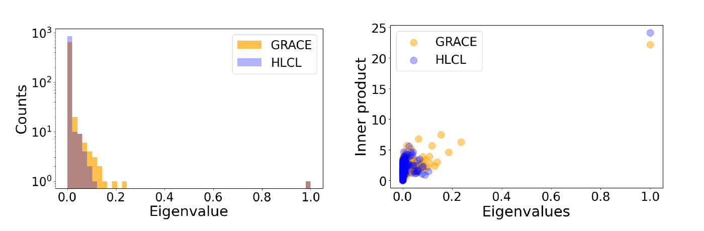

HLCL
Graph contrastive learning under heterophily via graph filters
The first graph contrastive learning method built on graph filters: low-pass where neighbors agree, high-pass where they differ.
On graphs where connected nodes usually belong to different classes, averaging over neighbors erases exactly what tells nodes apart. HLCL learns from both what neighbors share and how they differ, without any labels.
University of California, Los Angeles
What does each filter do to a real neighborhood?
A real neighborhood from the Chameleon graph (Figure 2b of the paper). Node color is the class. Node colors after filtering are computed live from this graph; accuracies are from Tables 1 and 3. For illustration the edges are split using true labels; HLCL infers the split from node features alone.
points over the best self-supervised method on Chameleon (50.9 vs 43.9)
points over the best supervised method on Chameleon, with no labels during training
edges in Twitch-gamers, where HLCL beats every self-supervised and supervised baseline
Overview
Graph neural networks learn by averaging each node with its neighbors. That works when neighbors share a label. On heterophilic graphs, such as Wikipedia pages linking across topics, most neighbors belong to other classes, and averaging blurs every node into its surroundings.
Graph contrastive learning inherits the same problem: it contrasts augmented views produced by the same averaging encoder, so on heterophilic graphs it learns little. Real graphs are also mixed. The same graph contains neighborhoods where everyone agrees and neighborhoods where nobody does.
HLCL treats the two cases differently. It is the first graph contrastive learning method to use graph filters: a low-pass filter that smooths nodes toward similar neighbors, and a high-pass filter that sharpens each node against dissimilar ones. Contrasting both kinds of views lets it capture both the low-frequency and high-frequency structure of the graph.
A homophilic neighborhood
Neighbors share a class. Averaging helps.
A heterophilic neighborhood
Neighbors span five classes. Averaging erases the differences.
Two real neighborhoods from the same graph, Chameleon (homophily ratio 0.23), redrawn from Figure 2 of the paper.
Method
HLCL needs no labels at any point. It works in three steps, all with a single shared encoder.
Using node features
Split the graph in two
For each node, its most similar edges (a fraction k₁) form the homophilic subgraph and its least similar (k₂) the heterophilic one. The split is refreshed every T epochs (50 by default) using the learned representations.
Shared encoder
Filter each half differently
A low-pass filter aggregates each node with its homophilic neighbors; a high-pass filter takes its difference from its heterophilic neighbors.
Two augmented views each
Contrast both kinds of view
An InfoNCE loss makes the two low-pass views of each node agree, and the two high-pass views agree. The low-pass output is the final representation.
Low-pass, homophilic subgraph(hi)L = Σj ∈ Nhom(i) ∪ {i} ( hi + hj )
High-pass, heterophilic subgraph(hi)H = Σj ∈ Nhet(i) ∪ {i} ( hi − hj )
Both filters are ordinary message passing, so HLCL costs about the same as a regular GNN and scales to graphs with millions of edges. The paper also proves that the HLCL loss makes the encoder invariant in both the low-frequency and high-frequency spectrum.
Results
Node classification accuracy with a linear probe on frozen representations. HLCL's largest gains over the best other self-supervised method on each heterophilic graph:
Both filters are needed
Training with only one kind of view loses most of the gain.
Better-structured representations
On Chameleon, HLCL's representations concentrate in fewer directions (left) that line up more with the labels (right) than GRACE's, a standard low-pass graph CL method.

Figure 3 (a, b) of the paper.
Full comparison
Accuracy (%) on nine benchmarks. Best per column in bold; OOM means out of memory.
Citation
@inproceedings{yang2024graph,
title = {Graph Contrastive Learning under Heterophily
via Graph Filters},
author = {Yang, Wenhan and Mirzasoleiman, Baharan},
booktitle = {Proceedings of the Fortieth Conference on
Uncertainty in Artificial Intelligence},
series = {Proceedings of Machine Learning Research},
volume = {244},
publisher = {PMLR},
year = {2024}
}